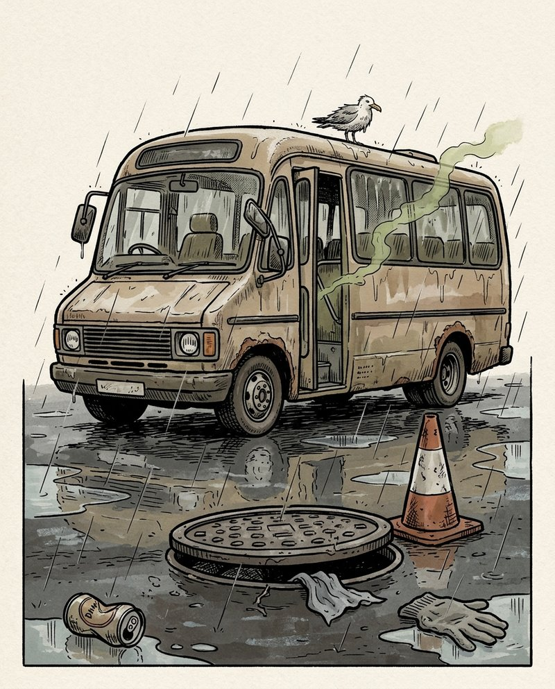

FRT Original · Interactive story
The School Trip That Should Have Been Cancelled
An interactive branching story for B1 English learners aged 11–15. Students make choices, encounter increasingly disastrous situations and discover different endings.
- Ages 11–15
- Level CEFR B1
- Time About 15 minutes
- Cost Free
- Access No login
Content note: Contains toilet humour, sewage and gross-out comedy. Best suited to younger teenagers who enjoy deliberately disgusting humour.
A full route takes about 15 minutes and the shortest ending about five, so it is worth replaying: there are eight endings. The online version works on phones, tablets and computers, has a Back button, and shows one page at a time. The PDF is the same story with clickable buttons; PDF viewers let readers scroll between pages, so use the online version when you want students to follow the choices.
